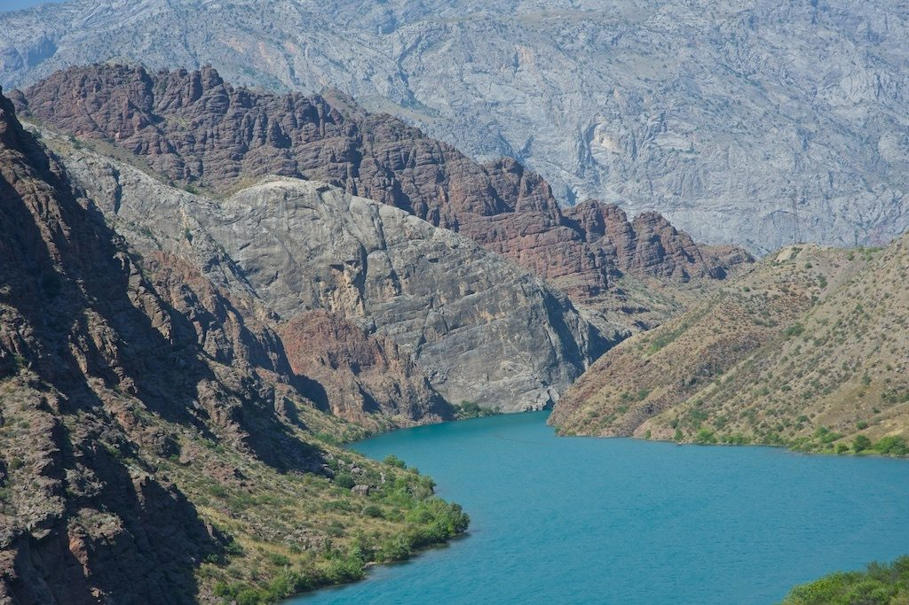
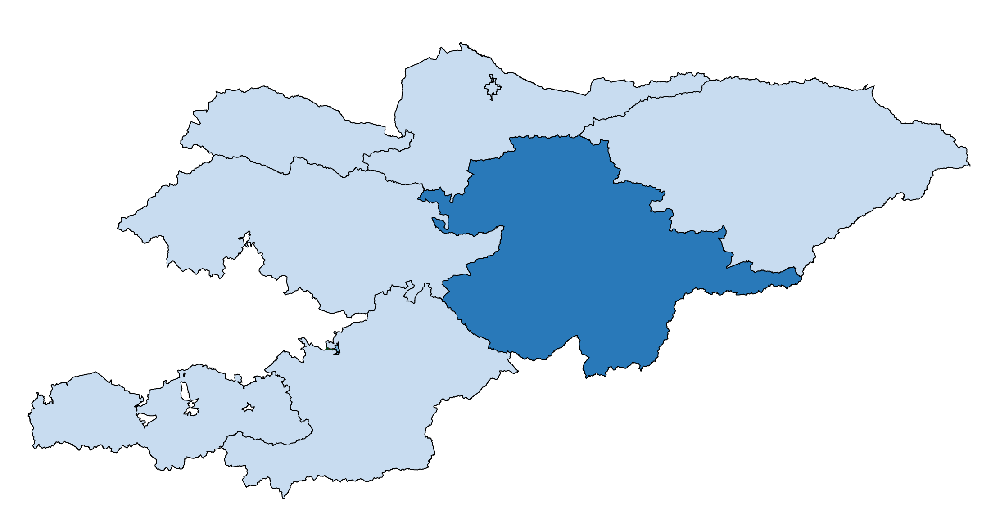

НАРЫН

Нарынская область расположена в
центральной части страны на склонах Внутреннего Тянь-Шаня. Н
арынская область самая высокогорная область республики и граничит
на востоке с Иссык-Кульской областью, на севере – с Чуйской областью,
на западе – с Джалал-Абадской и Ошской областями, а на юге – с Китайской Народной Республикой.
Общая площадь области составляет 45,2 тыс. кв. км, или около 23 процентов
территории Кыргызской Республики. Областной центр – г. Нарын.
В состав Нарынской области входят 5 районов, один город областного
значения – г.Нарын и 63 айылных аймака.

Ак-Талинский район – с. Баетово (центр района)
Ат-Башинский район – с. Ат-Башы (центр района)
Жумгальский район – с. Чаек (центр района)
Кочкорский район – с. Кочкор (центр района)
Нарынский район – г. Нарын (центр района)